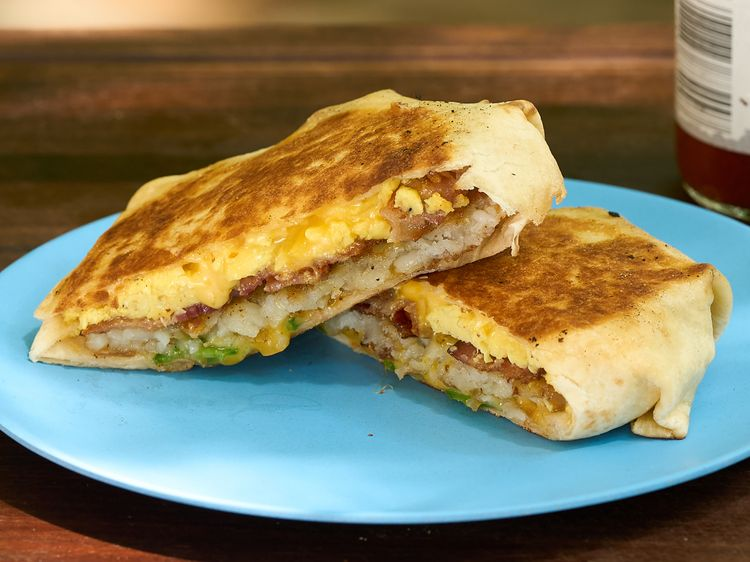

Chicken Stir-Fry

This loaded breakfast crunchwrap recreates the iconic breakfast favorite with layers of eggs, bacon, cheese, jalapeños, and a crispy hash brown wrapped in a tortilla and griddled until crisp. It’s an easy, flavor-packed breakfast that’s perfect with your favorite hot sauce.
Ingredients
- 2 chicken breasts, sliced
- 1 bell pepper, sliced
1 onion, sliced
- cloves garlic, minced
- 2 tablespoons soy sauce
- 1 tablespoon olive oil
- Salt and pepper to taste
Steps
- Heat olive oil in a large pan over medium heat.
- Add the chicken slices and cook until browned.
- Add the garlic, bell pepper, and onion, and stir-fry for 5-7 minutes.
- Add soy sauce, salt, and pepper, and cook for another 2 minutes.
- Serve hot with rice or noodles.
Back to recepies